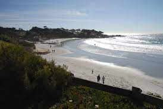
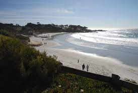

LA JOLLA SHORES BEACH
LOCAL FOOD


From downtown La Jolla head north on Torrey Pines Road then turn north onto La Jolla Shores Drive then
turn
left onto Calle Frescota which leads to the lot entrance.
Back to Top


 
